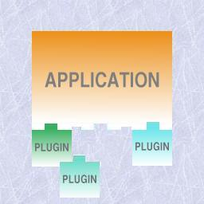
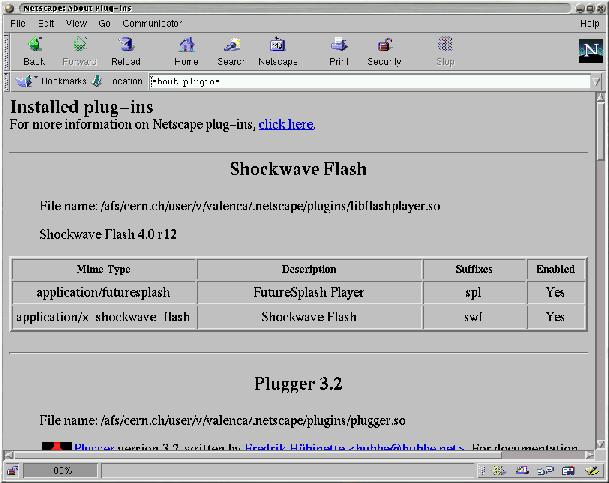
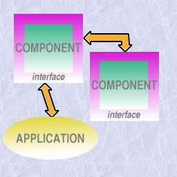
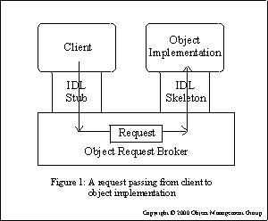
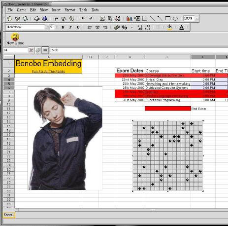

Developing with plugins and components
Paula Valença
Paula.Valenca@cern.ch
Copyright © 2000 by Paula Valenca
Nowadays, several projects have become so complex and large that are impossible to develop and maintain as a single monolithic block. On the other hand, the ability for an application to acquire as much functionality as possible, reusing software and without accumulating functionality not needed at that moment and, thus, not wasting resources, is also becoming an important problem.
These and other problems caused some new strategies to develop, in particular, the use of plugins and components which, using some old principles of modularity and implementation facilities like shared libraries and middleware (e.g., CORBA), permit to overcome these problems in a clean and standard way.
This article presents an overview over this technology.
Why plugins and components?
One of the biggest problems developers have to handle nowadays is on how to cope with the enormous size and complexity of an increasing number of current projects. It is common knowledge that from a certain point it is impossible to have the application as a monolithic block. It is necessary to divide the project in different parts, as independent as possible, so that architecting the different parts together is as easy and consistent as possible. This tends to be difficult since different teams are only familiar with their parts and the inter-communication is usually low. Also, it is very common nowadays to have a project spread in different platforms and locations.
On the other hand, it is also usually said that, if a certain functionality is needed and it is already available somewhere, one should reuse this implementation and not "reinvent the wheel". This should account also for using/developing products aside especially for a certain task instead of integrating that functionality in the main application. Besides the reusability, this also brings more flexibility and a simpler and clearer main application. For instance, consider an application which captures, evaluates and stores data where in the evaluation stage, some graphics need to be generated. There are a big number of applications that draw graphics and are probably preferred than to add "from scratch" graphics functionality to the application. But the main problem is whether the graphic program is easily integrated which, most of the times, is not the case.
Continuing on the subject of adding/changing functionality and considering the same example, imagine that the data it handles is very heterogeneous and, thus, the way this data is evaluated, for example, is different according to the type of data. When the set of the types handled is small and doesn't change and the way they are handled is also static, the final product is a bit complex but handleable. But when this is not the case several problems appear:
Flexibility and consistency. How to add/change/remove functionality in a flexible manner without compromising the consistency of the application and, preferably, not having to rebuild all the application?
Efficiency. How to do this in a way that doesn't compromise to much the efficiency, e.g., there isn't a waste of resources since most will only be used for a certain period or not even used at all in a session?
Recently, two paradigms have evolved that are especially aimed at this type of problems: Plugins and Components. These enable us to fulfil the following compilation of objectives in a clever and transparent way. It is easily seen why this two paradigms have become so popular.
- Modularity
Modularity is one of the keywords. How to divide an utility in different parts that obey the rules of modularity (independence, encapsulation) and interact with each other in a desired way. A special case would be to divide an utility in its main part (management) and its several branches, thus, separating functionality.
- Dynamic functionality independent of the main part
In other words, to be able to add/change/remove functionality of an utility without touching the main part. As an add-on, to be able to do that on runtime. This implies that the application shouldn't be rebuild and, further more, compiled, each time these changes take place.
- Independent development of parts
The development of each part of a project should be independent from the other ones. This obliges the communication between parts to be transparent and standard. Also, each part should be able to cope with the others being in different platforms and locations. Basically, each part shouldn't have to worry about how others are implemented and located.
- Communication between applications
This means being able to embed an application A that provides a desired functionality inside an application B thus reusing code and providing a lighter and simpler application B.
On plugins

An illustration of the plugin-concept: an independent application where units of software, intended to complement the functionality, can be "plugged" to.
A plugin is a unit of software intended to extend the functionality of an independent application at run-time (see Glossary). It provides several advantages, making this technology very popular among several programs that process heterogeneous data and would, otherwise, be less flexible and heavier (one of the most famous examples being Netscape that uses plugins to handle and/or view special data like audio or movies):
The functionality is added/changed/removed on runtime so that the application doesn't have to be rebuild and, furthermore, not even recompiled.
The application doesn't know the plugin beforehand ( it is the plugin's responsibility to present itself) providing wider flexibility to what functionality can be added.
It leads to a complete, clean separation from the main application and the various branches with their separate functionality. Thus we get a lighter main application focused on the essentials.
It is usually very easy for an user to add a plugin to the application.
Plugins are usually implemented as demand-loaded shared libraries. These type of libraries are only loaded on runtime as opposed to static whose code is included in the application on the compilation stage. They can be loaded in two different ways:
automatically at the start of the process and, thus, only unloaded at the end: the library must be linked at compilation stage;
by request of the program itself (using, for example, dlopen()): the code can be loaded and unloaded in the middle of the process or not even loaded at all; furthermore, the library is not linked at compilation stage;
When the library is loaded, the system checks if it is already in memory, so that, at most, one copy of the library is present in the memory.
Plugins are typically implemented as the second type since their characteristics are especially adequate for the "plug" concept. But in order to comply with the desired functionality of a plugin, the following list of requirements must be met:
The application must be independent from the plugins.
There should be a "black-box" view in both directions.
The application must not "know" the plugin beforehand; the plugin must introduce itself to the application.
The application must be loosely coupled with the plugins; a common interface to be provided by the plugins (whether total or partial) must be defined precisely (Contract).
The application should define what services are provided to the plugin via interface definitions.
A plugin must be self-contained.
A plugin should create a plugin instance to handle each task.
The interface common to all plugins is one of the critical points and, although this interface varies between technologies, the plugin should provide:
information on the type of task it can handle
a function to be called to handle that type of task (do_work())
an instance-type strategy including a structure to store all the data of a particular task and a way to know if there aren't any tasks (instances) still working so that the plugin can be unloaded
a function to initialize the plugin
Some popular examples

Netscape (and other Web browsers) uses plugins to view/handle special data present in some Web pages, for example, audio and video.
The API is very well defined in the documentation: it contains a list of functions provided by Netscape, a list of functions the plugin must and can define and structures to be used. Since the communication is all done by this total interface, both parts act as complete "black-boxes". Another interesting characteristic is the life cycle of a plugin: Initialize(when the plugin is first called), New Instance(each time it is invoked), Destroy Instance(when a task is completed and that instance is no longer needed) and Shutdown (when all instances are destroyed).
PluginInitResult
init_plugin (CommandContext *context, PluginData *pd)
{
FunctionCategory *cat;
5
/* The next line checks if the Gnumeric version being used corresponds
to the required by the plugin */
if (plugin_version_mismatch (context, pd, GNUMERIC_VERSION))
return PLUGIN_QUIET_ERROR;
10
cat = function_get_category (_("Fact PlugIn"));
function_add_args (cat, "MyFactorial", "f", "number", NULL, func_fact);
pd->can_unload = can_unload;
15 pd->cleanup_plugin = cleanup_plugin;
pd->title = g_strdup ("My PlugIn Plugin");
return PLUGIN_OK;
} |
The program listing above is part of a Gnumeric plugin source code. Gnumeric uses plugins both to handle different formats (e.g., Excel) and add functions not defined (statistical, numerical,...). The API the plugin must define is very concise and partial: the plugin registers the new functions it defines (in lines 11-12, the plugin is registering a function, in this example, the factorial function). The init_plugin() function is called at start-up. Besides registering the functions it also provides information on the Plugin (in this case, the title) and functionality to unload the plugin (e.g., check if there aren't any instances left). Although Gnumeric plugins are not the best example, since the requirements above are not completely met (Gnumeric is completely transparent to the plugin) it provides a very simple example with most of the core ideas.
On components

An illustration of the use of components
There isn't much consensus on what constitutes a component. Although this is not complete and may seem to general we can say that a component is a unit of software with the following characteristics:
It is an indivisible unit of independent deployment . The component must be independent from the environment and other components and, so, has to encapsulate it's features. It also can't be partially deployed since it constitutes an whole.
It is a unit of third-party composition. A party exterior to at least one component must be able to compose them together. The component has to be self-contained, interface hiding and provide a well defined interface
Has no persistent state. This way, any copy of a component won't differ from the original so that, at most, one copy of the component is present.
A typical use is in big, complex and heterogeneous projects divided in different parts, each with its particular function and interacting with other parts of the project, being developed by different teams and where each part doesn't want to know how the other parts are implemented or where they are located. Basically, each part constitutes a component. An interface contract for each component is established and interaction is done through these interfaces.
Another example can be found in desktop environments. Imagine a user writing a document or a web page where he wants to integrate a graphic. Putting graphics functionality in the word processor or web page editor would be overloading them (how about audio, movie, barcharts...?). Doing it outside and importing as an image is also not the best solution. But if there is already a mechanism for handling that functionality why not reuse it? Basically, the idea is to "embed" the graphics mechanism in the word processor or web page editor (something like: "when handling this data use this particular mechanism"). But to have a good interaction between mechanisms we need independence, interface contracts and again components appear as a good solution for this.
The key aspects in component-based development are [1] :
Standardised parts and services (both through the standardisation of components and the environment in which they operate.)
Minimal or no contact between entities designing components; decoupling of development efforts.
Access to practical (re)use both internal and external through standardised interoperability, configurability, and deployment.
Independent variability through documentation of components 'seams' (the interfaces used and exposed).
Source code for custom needs; binary components for standard needs.
A strict emphasis on component assembly first; manual coding second.
A robust mechanism for the delivery of architectures, frameworks, and services.
But to conform with this characteristics it is necessary to complement the definition above with a list of requirements that must be met[1][2]:
A component must be loosely coupled with other components via interface definitions and implementation separation.
A component must explicitly identify both the interfaces it uses and exposes, and/or the service categories it uses and exposes.
A component has an unbreakable contract with all of its clients by virtue of the services its interface promises to deliver (design by contract).
A component must be deliverable in binary form (black box).
A component must use and expose services through standardised middleware services (DCOM, CORBA, JavaBeans, etc.)
A component must be configurable at design-time/run-time through a standardised interface (such as ActiveX and JavaBeans property sheets or standard configuration files).
A component must be interoperable with other components across processes, machines, networks, languages, operating systems, transaction environments, and tools.
A component should make use of standardised infrastructure services such as security, licensing, versioning, life-cycle management, visual assembly, event notification, configuration, scripting, metadata, introspection, persistence, relationships, administration, management, debugging, and installation.
A component should be able to wire itself into a collaboration with other components solely via design-time/run-time configuration.
One of the keywords in component-based technology is middleware. Middleware is now a very popular term and is basically used to refer to software "that sits in the middle, connecting diverse (and usually preexisting) programs together". In other words, a separate product that acts as a glue between two applications.

A request passing from client to object implementation (from the OMG documentation)
CORBA is one of the most popular architecture and specification for creating software components. It provides the functionality required as middleware. CORBA stands for Common Object Request Broker Architecture and is defined by OMG. Its building blocks are:
OMG Interface Definition Language, OMG IDL which defines mappings for a variety of different languages and which purpose is to abstract from the language being used to implement the component so that they all have a common language.
The Object Request Broker or ORB which handles requests from programs to components and between components enabling abstraction of where the program that receives the request and the one sending are.
The standard protocol IIOP which provides a standard communication between different ORBs above TCP/IP.
CORBA provides, with these building blocks, independence of language and independence of platform.
As an example, GNOME implemented BONOBO in order to comply with interoperability between different applications in the desktop (e.g, embed a graphics object in a word processor document). BONOBO is basically a set of CORBA interfaces and an implementation in GNOME/GTK+ of these interfaces that are designed to be simple to use and hide CORBA and between-components protocol used. An application uses these interfaces to export its functionality or integrate other components functionality making it possible to edit a graphic or even play GnoMines in a spreadsheet.

Some remarks
When developing either plugins or components, some requirements must be met to obtain all the functionality provided by these two paradigms[3].
It may seem that some of this requirements are, sometimes, dispensable. For example, why use strategies like CORBA when it doesn't seem to be necessary? The problem is that, if we want to make use of the benefits that this technology enables, not complying with just one of the requirements will make the plugin/component-strategy less robust and flexible. In this example, if later on there would be a need to have different platforms, for example, wrappers would have to be written to do the work this technology is responsible for.
These technologies are very different and each has it's advantages and disadvantages as also having different scopes. If it is the right choice to use one of them or which one to use depends on the project. Nevertheless there are some common keywords that pop out:
Modularity
Encapsulation
Interface contracts
Finally, please note that
 | It was the purpose of this article to present only an overview on this interesting and popular technology. Please refer to http://wwwinfo.cern.ch/pdp/ose/plcomp00/ for a more detailed study, specially regarding the pros and cons, why the above requirements are needed and more focus on implementation issues. |
Glossary
- Plugins
A unit of software whose purpose is to extend the functionality of an independent application at run-time. The application has no prior knowledge of the plugin; plugin must act as a "black-box" and present itself by means of a standard interface.
- Components
A component is an indivisible unit of independent deployment.
A component is a unit of third-party composition.
A component has no persistent state.
- Shared libraries
a block of code, loaded on request, providing data types and procedures.
- Middleware
A popular and generic term basically used to refer to software "that sits in the middle, connecting diverse (and usually preexisting) programs together". In other words, a separate product that acts as a glue between two applications.